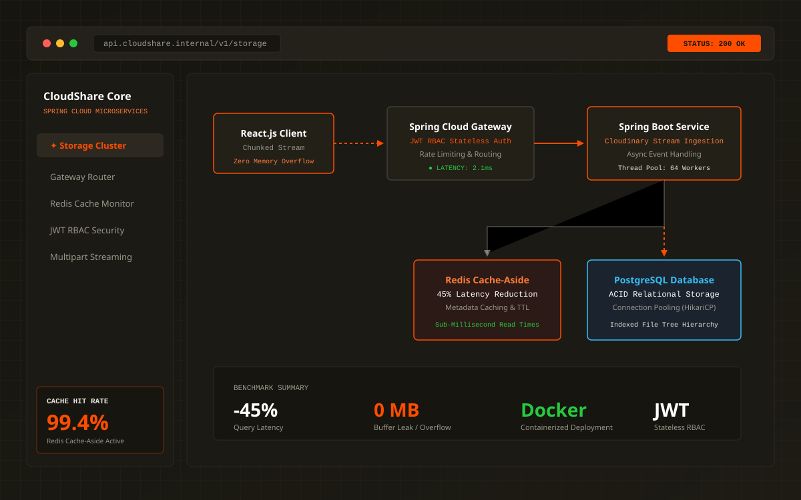

Flagship Project
Production Microservices
CloudShare
Scalable Cloud Storage & Streaming Microservices Platform
Architected a high-throughput microservices ecosystem designed to handle massive media ingestion without memory degradation, featuring dynamic Spring Cloud Gateway routing, stateless RBAC authentication, and a Redis cache-aside metadata tier.
- Spring Cloud Gateway dynamic routing with stateless RBAC JWT authentication
- Slashed metadata query latency by 45% via Redis cache-aside architecture
- Engineered resilient ingestion with Cloudinary chunked multipart streaming preventing heap memory overflows
- Containerized microservices orchestration with Docker and automated service isolation
- Java 21
- Spring Boot 3
- Spring Cloud Gateway
- PostgreSQL
- Redis
- Docker
- React.js
- JWT RBAC
System Benchmark Metrics
- Query Latency Cut
- -45%
- Upload Memory Overflows
- 0
- Stateless Auth
- JWT RBAC